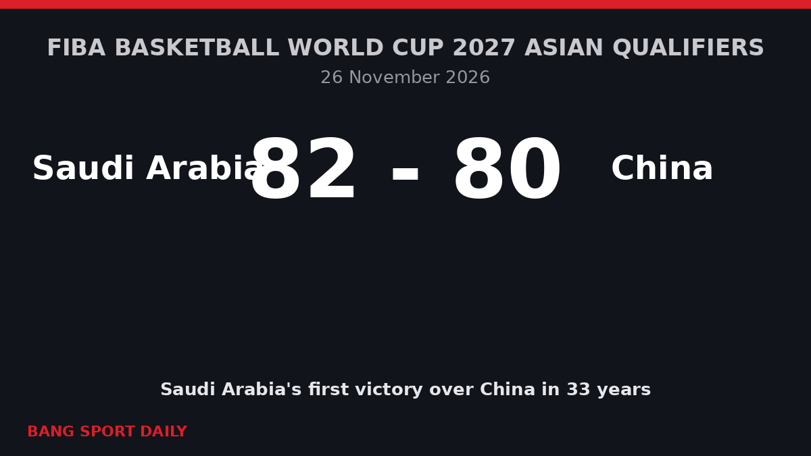

世预赛爆大冷！沙特82-80险胜中国男篮，时隔33年首胜
三分命中率仅16.7%叠加周琦遭驱逐，中国队小组战绩跌至5胜4负

11月26日星期四，2027年国际篮联篮球世界杯亚大区预选赛第五窗口期在卡塔尔多哈的贾努布体育馆打响。沙特阿拉伯男篮以82-80爆冷击败中国男篮。据国际篮联报道，这是沙特队自1993年亚洲杯以来首次在国际篮联主要赛事中战胜中国队，此前双方的六次交手沙特队均告负。
周琦遭驱逐成转折点
比赛开局，中国男篮打出10-2的攻击波，首节战罢以29-25领先。次节风云突变，沙特队单节打出23-14的反击高潮，在半场结束时以48-43实现反超。

决定比赛走向的关键一幕发生在第三节还剩4分44秒时：中国队中锋周琦在内线卡位争夺时因肘部动作被裁判直接吹罚取消比赛资格犯规（夺权犯规），就此被驱逐出场。周琦在退场前出战11分钟，投篮6投5中高效砍下10分。沙特队乘机一度将分差扩大到8分，不过中国队在第三节末将比分迫近至66-68。进入末节，后卫廖三宁带领中国队反扑，前锋李弘权三罚全中，中国队在比赛最后阶段以75-72夺回领先。
投篮冰凉葬送好局
但沙特队在决胜阶段稳扎稳打重新夺回主动权。前锋阿里·舒拜利（Ali Shubayli）在比赛仅剩6秒时两罚全中，帮助沙特队确立82-79的领先。最后2秒胡明轩站上罚球线，他罚中第一球后第二球故意不中并抢下关键的前场篮板，遗憾的是他在压哨出手的三分球弹筐而出。
全场比赛，中国队外线手感冰凉，三分球30投仅5中（命中率低至16.7%），沙特队外线则是23投7中。低迷的外线投射抵消了中国男篮在篮板球上的努力，此役中国队抢下25个前场篮板。
沙特中锋穆罕默德·阿尔苏韦利姆（Mohammad Alsuwailem）统领全场，砍下全场最高的20分，另有4次助攻和2次盖帽。沙特队另有4人得分上双：哈立德·贾巴尔（Khaled Gabar）贡献15分，马祖格·阿尔穆瓦拉德（Marzouq Almuwallad）得到13分，舒拜利与穆罕默德-阿里·阿卜杜勒-拉赫曼（Mohammad-Ali Abdur-Rahkman）各自入账12分。中国队方面，廖三宁和胡明轩各取15分并列全队最高，胡金秋拿下14分7篮板。
F组出线形势骤然吃紧
“三分球投得太差是我们输球的关键原因，”据新华社报道，中国男篮主教练郭士强赛后表示，“我们输掉了一场至关重要的比赛，接下来争夺世界杯门票的形势会变得更加艰难。”
本场失利后，中国队在F组的战绩跌至5胜4负，与韩国队持平，但由于此前两次交手均不敌对手，中国队在胜负关系上处于劣势。沙特队的战绩则来到4胜5负，继续保留出线希望。11月29日，中国男篮将客场挑战黎巴嫩队。